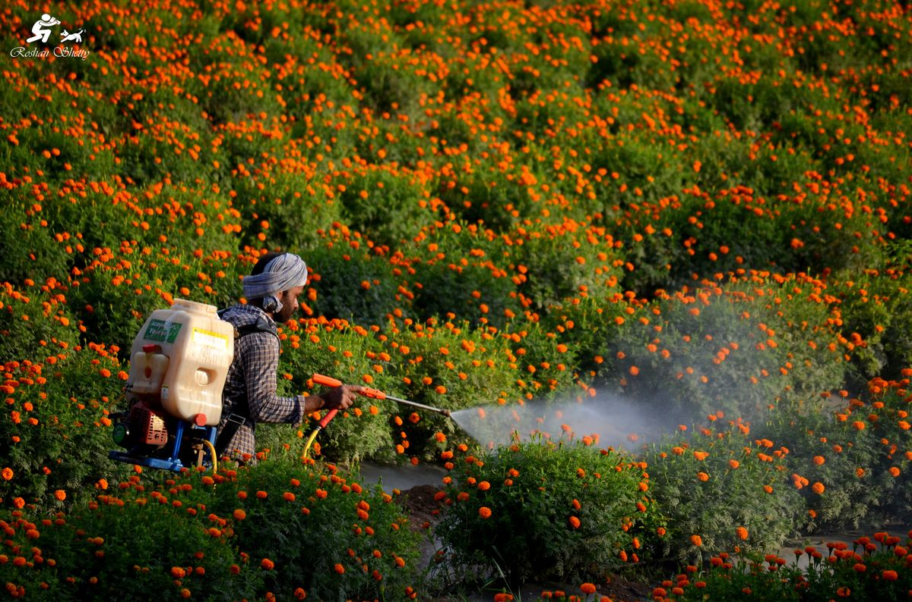
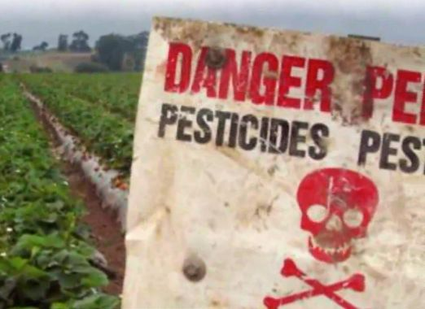
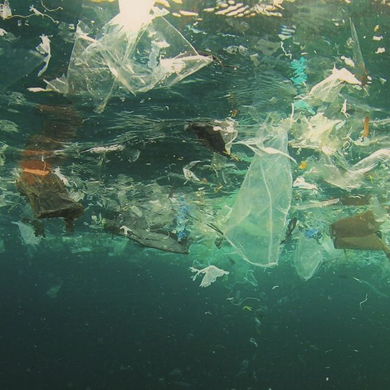
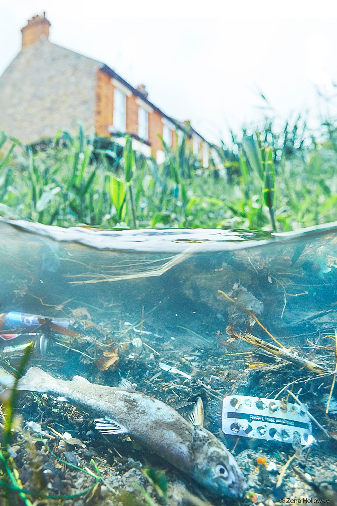
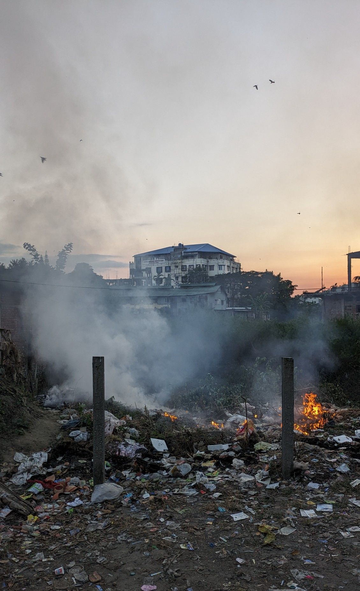
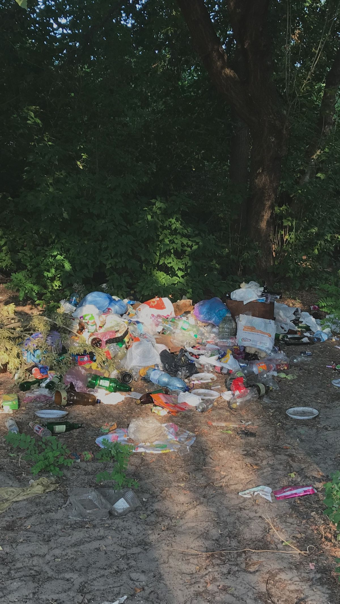
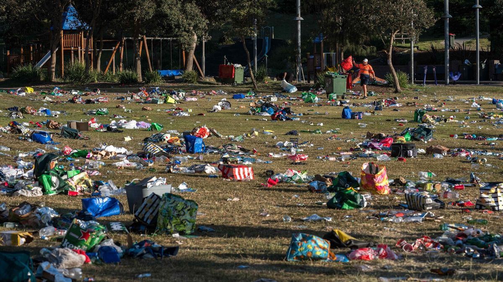

How Pollution Affects Humans
Land pollution affects the food we eat, the water we drink, and the air we breathe right now and later on.


Food and Farming
Most of our food comes from soil, so dirty soil affects what ends up on our plates.
Chemicals and plastics in crops: Pesticides, heavy metals, and microplastics in farm soil can get taken up by plants and show up in regular produce.
Harder to grow enough food: If soil keeps losing nutrients and getting polluted, farming gets harder and food costs can go up for everyone.
More details
Some chemicals and microplastics stay in the soil and build up in plants and animals over time.


Drinking Water
When it rains, trash and chemicals on land can wash into water sources.
Polluted runoff: Fertilizer, waste from landfills, and industrial chemicals can leak into groundwater and rivers used by nearby towns.
More expensive water cleanup: Once underground water gets polluted with hard-to-remove chemicals, its much harder and more expensive to clean.
More details
Healthy plants and soil help filter rainwater before it reaches streams and wells, so damaged land makes water harder to keep clean


Air and Health
Land pollution can also mess with air quality and people's health.
Smoke and dust: Burning trash on land creates harmful smoke, and dry bare dirt can blow dusty particles into nearby areas, which irritates lungs.
Long-term health issues: Breathing in polluted air and fine particles over many years can lead to more breathing and heart problems.
More details
Kids, older adults, and people who already have asthma usually feel air and dust pollution first.


Neighborhoods and Jobs
Dirty land also affects everyday life, local jobs, and places people hang out
Clogged drains and litter: Trash in streets and ditches can block water flow during heavy rain and make parks and neighborhoods look messy.
Lost land and fewer green spots: Damaged land and fewer trees can mean worse flooding, hotter neighborhoods, and less space for farming or recreation.
More details
farmers and local workers rely on healthy land for their income, so long-term land damage hits local economies too.
What Comes Next
Check out the next page to see simple things you can do to help cut down on land pollution.